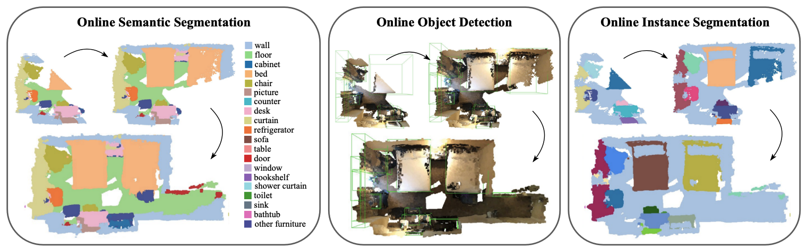
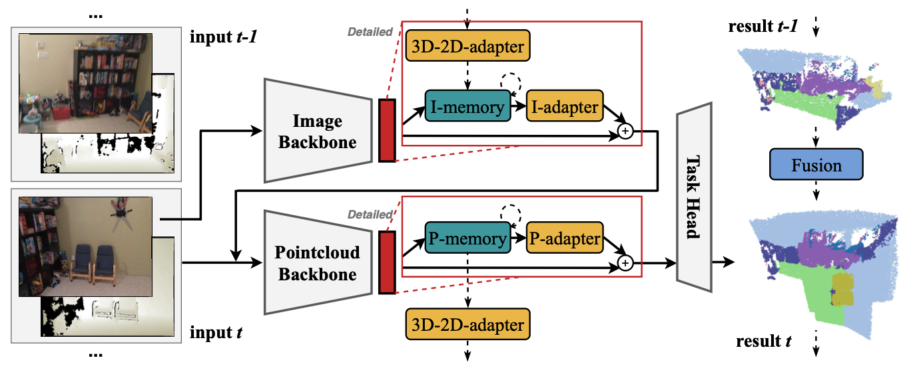
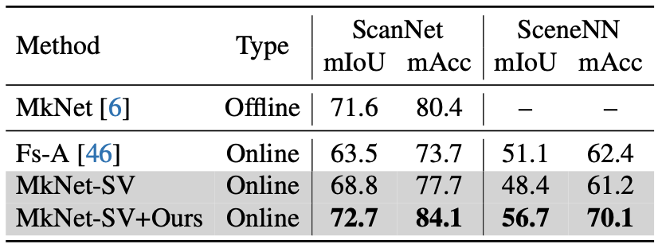
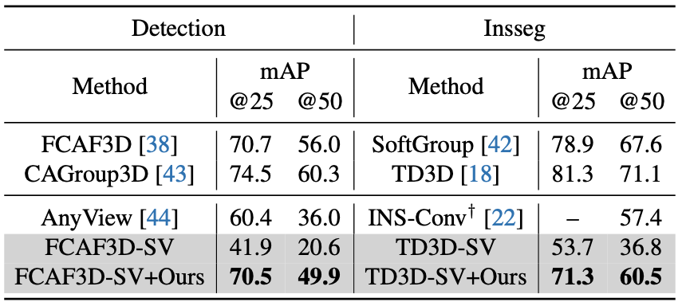
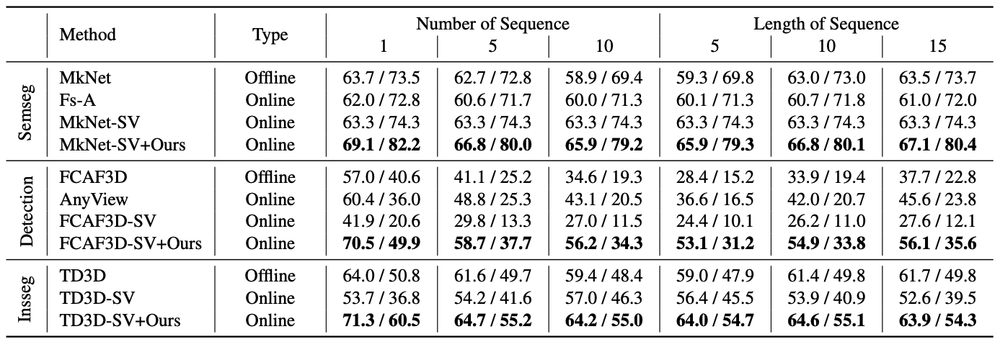

In this paper, we propose a new framework for online 3D scene perception. Conventional 3D scene perception methods are offline, i.e., take an already reconstructed 3D scene geometry as input, which is not applicable in robotic applications where the input data is streaming RGB-D videos rather than a complete 3D scene reconstructed from pre-collected RGB-D videos. To deal with online 3D scene perception tasks where data collection and perception should be performed simultaneously, the model should be able to process 3D scenes frame by frame and make use of the temporal information. To this end, we propose an adapter-based plug-and-play module for the backbone of 3D scene perception model, which constructs memory to cache and aggregate the extracted RGB-D features to empower offline models with temporal learning ability. Specifically, we propose a queued memory mechanism to cache the supporting point cloud and image features. Then we devise aggregation modules which directly perform on the memory and pass temporal information to current frame. We further propose 3D-to-2D adapter to enhance image features with strong global context. Our adapters can be easily inserted into mainstream offline architectures of different tasks and significantly boost their performance on online tasks. Extensive experiments on ScanNet and SceneNN datasets demonstrate our approach achieves leading performance on three 3D scene perception tasks compared with state-of-the-art online methods by simply finetuning existing offline models, without any model and task-specific designs.

Approach
Overall architecture of our approach. We insert memory-based adapters after image and point cloud backbones, which cache the extracted features in memory over time and perform temporal aggregation. 3D-to-2D adapter is proposed to further exploit inter-modal temporal information. Solid lines indicate operations within a single frame, while dashed lines indicate temporal operations.

Experiments
We evaluate our method on ScanNet and SceneNN datasets for three 3D scene perception tasks.

3D semantic segmentation results on ScanNet and SceneNN datasets. For online methods, we map the predictions on point clouds concatenated from posed RGB-D images to the reconstructed point clouds to compare with offline method.

3D object detection and instance segmentation results on ScanNet dataset. Offline and online methods are separated by horizontal line. † means INS-Conv requires an additional 3D reconstruction algorithm to acquire high-quality point clouds or meshes.

The performance of different 3D scene perception methods on ScanNet online benchmark. We report mIoU / mAcc, mAP@25 / mAP@50 and mAP@25 / mAP@50 for semantic segmentation, object detection and instance segmentation respectively.
Bibtex
@article{xu2024online,
title={Memory-based Adapters for Online 3D Scene Perception},
author={Xiuwei Xu and Chong Xia and Ziwei Wang and Linqing Zhao and Yueqi Duan and Jie Zhou and Jiwen Lu},
journal={arXiv preprint arXiv:2403.06974},
year={2024}
}
 Paper (arXiv)
Paper (arXiv)
 Code (GitHub)
Code (GitHub)
 中文解读 (Zhihu)
中文解读 (Zhihu)